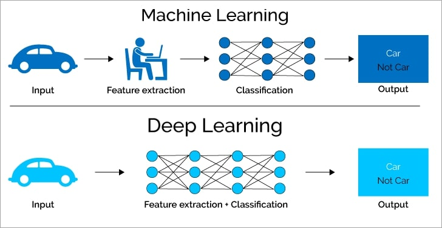

Deep Learning vs. Traditional Machine Learning: Understanding the Differences

Introduction
Machine learning (ML) has dramatically transformed industries, enabling systems to learn from data and make predictions. However, the term "machine learning" encompasses a wide range of algorithms, with traditional machine learning and deep learning being two of the most widely used approaches. While both belong to the same family, they have distinct differences in terms of data handling, model complexity, and application.
What is Traditional Machine Learning?
Traditional machine learning refers to a range of algorithms that use statistical techniques to model data and make predictions. These algorithms typically require feature engineering and domain expertise to work effectively. Common types of traditional ML algorithms include:
- Linear Regression: Used for predicting continuous values by fitting a line to data.
- Logistic Regression: A method for binary classification that predicts probabilities of two classes.
- Decision Trees: A flowchart-like structure used for classification and regression tasks.
- Random Forests: An ensemble method combining multiple decision trees to improve accuracy.
- Support Vector Machines (SVM): A classifier that finds the optimal hyperplane to separate data into different classes.
- K-Nearest Neighbors (KNN): A simple algorithm that classifies data based on the majority class of its neighbors.
- Naive Bayes: A probabilistic classifier based on Bayes' theorem.
What is Deep Learning?
Deep learning is a subset of machine learning that focuses on using artificial neural networks to model complex relationships in large datasets. These networks consist of many layers (hence the term "deep") and automatically learn features from the raw data, making them especially powerful for handling unstructured data like images, audio, and text.
Key characteristics of deep learning models:
- Multiple Layers: Deep learning models use multiple hidden layers of neurons to extract increasingly abstract features from raw data.
- End-to-End Learning: Unlike traditional ML models that require feature engineering, deep learning models learn directly from raw data.
- Data-Driven: Deep learning excels when provided with large amounts of data and computational power.
Key Differences Between Deep Learning and Traditional Machine Learning
Data Requirements
Traditional ML works well with small to medium-sized datasets, while deep learning thrives on large datasets to achieve high performance.
Feature Engineering
Traditional ML requires manual effort in feature extraction, whereas deep learning models learn these features automatically.
Model Complexity and Training Time
Deep learning models are more complex and require longer training times compared to traditional machine learning models.
Interpretability
Traditional ML models are generally easier to interpret, while deep learning models are often seen as black-box models.
When to Use Traditional Machine Learning
- Small Datasets: Effective with limited labeled data.
- Structured Data: Performs well with clear tabular data features.
- Faster Prototyping: Easier and quicker to train for initial experiments.
When to Use Deep Learning
- Large Datasets: Excels when large volumes of data are available.
- Unstructured Data: Ideal for images, audio, video, or text.
- Complex Tasks: Suitable for tasks like image classification, speech recognition, and NLP.
Conclusion
Both traditional machine learning and deep learning have their own strengths and weaknesses. Understanding their differences will help you choose the right approach for your machine learning projects, ensuring you get the best results from your data.